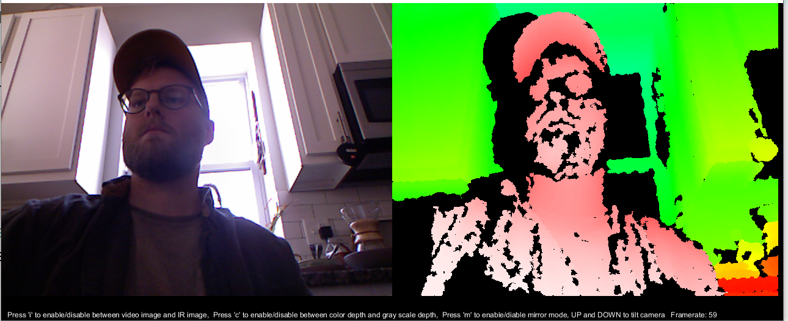

Some brief info about using the kinect with processing
This Daniel Shiffman how to is pretty good: https://shiffman.net/p5/kinect/
You need a Kinect as well as an adapter to connect to USB and to power the Kinect
This is the one I ordered after I found an XBOX 360 Kinect at Goodwill for $5: Kinect Adapter
Then you need the correct drivers for your machine (Windows, Linux, MacOS)
There are some differences in Kinect models, so for reference I am using a Kinect for XBOX 360 model 1414
This may look daunting, but if you look in the README there is an explanation for each OS: https://github.com/OpenKinect/libfreenect#fetch-build
I did this in Windows 10 in about 15 minutes
The README for the Github repository linked above instructs to use Zadig to install the appropriate USB drivers for each of the devices of the Kinect.
That last sentence may seem strange because the Kinect is one object, but it appears in your system as several different devices, audio device, camera, and motor for the movement.
I installed the libusbK drivers for each Kinect device. Initially Zadig only saw one device, but after installing the appropriate driver the other two devices showed up.
At this point your drivers are good to go, so we need to get Processing setup
Install the OpenKinect library by Daniel Shiffman in Processing
Sketch -> Import Library -> Add Library
Search for Kinect and install the Open Kinect Library
Next open one of the examples and check out your Kinect
File -> Examples -> Contributed Libraries -> Open Kinect for Processing -> Kinect_v1
I looked at the RGBDepthTest example
This is just the start, but Daniel Shiffman has some great videos about how to do things with the Kinect. Reach out if you have questions!